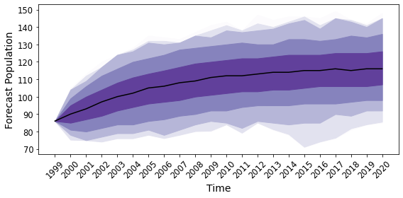

Forecasting¶
Confidence and prediction intervals are two simple ways to convey information about possible future states of a stochastic process. Confidence intervals are focused on parameter uncertainty, while prediction intervals incorporate parameter uncertainty and model stochasticity. Let \(Z_{\boldsymbol\theta}\) be a birth-and-death process evolving according to parameters \(\boldsymbol\theta\). Associated with each possible parameter value vector \(\boldsymbol\theta\) is an expected trajectory of the process \(\big(m_{\boldsymbol\theta}(t), t\in[0,T]\big)\) where \(m_{\boldsymbol\theta}(t) = \mathbb E Z_{\boldsymbol\theta}(t)\). The paths \(m_{\boldsymbol\theta}\) can be approximated using simulation or by the mean curve of the diffusion approximation described here. When uncertainty about parameter values is characterized by some distribution a confidence interval can be formed by sampling from this distribution and collecting together the associated approximations of \(m_{\boldsymbol\theta}\). Alternatively, each sampled parameter vector \(\boldsymbol\theta\) can be used to generate a sample \((Z_{\boldsymbol\theta}(t), t\in[0,T])\). Collecting these samples together allows for an approximate prediction interval to be formed.
BirDePy provides a basic forecasting function birdepy.forecast().
Generate some synthetic data and estimate the parameters:
import birdepy as bd
import numpy as np
t_data = np.arange(0, 101, 1)
p_data = bd.simulate.discrete([0.75, 0.25, 0.02, 1], 'Ricker', 10, t_data,
survival=True, seed=2021)
est = bd.estimate(t_data, p_data, [0.5, 0.5, 0.05], [[0,1], [0,1], [0, 0.1]],
model='Ricker', idx_known_p=[3], known_p=[1])
Then, use the estimated parameters to generate a forecast:
future_t = np.arange(101, 151, 1)
bd.forecast('Ricker', p_data[-1], future_t, est.p, cov=est.cov,
p_bounds=[[0,1], [0,1], [0, 0.1]], idx_known_p=[3], known_p=[1],
interval='prediction', xticks=np.arange(101, 151, 10))
Which produces a plot:
